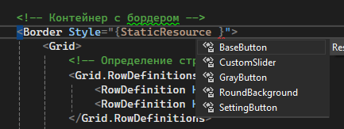

Кто такой этот ваш "Стиль"
Стили позволяют определить набор некоторых свойств и их значений, которые потом могут применяться к элементам в xaml. Стили хранятся в ресурсах и отделяют значения свойств элементов от пользовательского интерфейса. Также стили могут задавать некоторые аспекты поведения элементов с помощью триггеров. Аналогом стилей могут служить каскадные таблицы стилей (CSS), которые применяются в коде html на веб-страницах.
Стили помогают создать стилевое единообразие для определенных элементов.
Начало стиля описывается следующим образом:
TargetType- определяет тип элемента, к которому применяется стиль.x:Key- название стиля, используется для применения стиля по ключу к определенному объекту. Наличие ключа обязательно.
Внутри тэга стиль пишутся Setter. С помощью них устанавливаются значения указанных свойств.
Property- свойство цвета кисти.Value- значение этой кисти. Тут в RGB.
Описание стилей с комментариями:
<ResourceDictionary xmlns="http://schemas.microsoft.com/winfx/2006/xaml/presentation"
xmlns:x="http://schemas.microsoft.com/winfx/2006/xaml"
xmlns:local="clr-namespace:lab3">
<local:BoolToString x:Key="myBoolConverter" />
<!--Базовый стиль для наших кнопок. Определяем в нем повторяющиеся свойства -->
<Style TargetType="Button" x:Key="BaseButton">
<Setter Property="Background" Value="#fff"/>
<Setter Property="Foreground" Value="#000"/>
<Setter Property="FontSize" Value="15"/>
<Setter Property="Padding" Value="5"/>
<Setter Property="Margin" Value="5"/>
</Style>
<!--Стиль кнопки с серым цветом, когда курсор наводится на кнопку -->
<!--Свойство BaseOn указывает стиль основы, то есть стиль выше -->
<Style TargetType="Button" x:Key="GrayButton" BasedOn="{StaticResource BaseButton}">
<!--Настройки для скругленных углов-->
<!--С помощью этих свойств мы получаем доступ к элементу Border внутри кнопки-->
<Setter Property="Template">
<Setter.Value>
<ControlTemplate TargetType="Button">
<!--CornerRadius - строка, отвечающая за скругление кнопки-->
<Border Background="{TemplateBinding Background}"
CornerRadius="5"
BorderThickness="1"
Padding="5"
BorderBrush="#000">
<ContentPresenter HorizontalAlignment="Center" VerticalAlignment="Center"/>
</Border>
</ControlTemplate>
</Setter.Value>
</Setter>
<!--Триггер нахождения курсора над кнопкой-->
<!--Если навели - поменять цвет фона на серый-->
<Style.Triggers>
<Trigger Property="IsMouseOver" Value="True">
<Setter Property="Background" Value="#FF7D7D7D"/>
<Setter Property="Foreground" Value="#fff"/>
</Trigger>
</Style.Triggers>
</Style>
<!--Стиль кнопки для изменения названия комнаты, когда курсор наводится на кнопку -->
<!--Свойство BaseOn указывает стиль основы, то есть стиль выше -->
<Style TargetType="Button" x:Key="SettingButton" BasedOn="{StaticResource BaseButton}">
<!--Хотя мы и задали свойство размера шрифта в основном стиле, мы можем переопределять свойства-->
<!--В основном стиле шрифт был 15-->
<Setter Property="FontSize" Value="13"/>
<Setter Property="HorizontalContentAlignment" Value="Center"/>
<Setter Property="VerticalContentAlignment" Value="Center"/>
<Setter Property="Template">
<Setter.Value>
<ControlTemplate TargetType="Button">
<!--CornerRadius - строка, отвечающая за скругление кнопки-->
<Border Background="{TemplateBinding Background}"
CornerRadius="15"
BorderThickness="1"
Padding="5"
BorderBrush="#000">
<ContentPresenter HorizontalAlignment="Center" VerticalAlignment="Center">
</ContentPresenter>
</Border>
</ControlTemplate>
</Setter.Value>
</Setter>
<Style.Triggers>
<Trigger Property="IsMouseOver" Value="True">
<Setter Property="Background" Value="#FF7D7D7D"/>
<Setter Property="Foreground" Value="#fff"/>
</Trigger>
</Style.Triggers>
</Style>
<Style TargetType="Border" x:Key="RoundBackground">
<Setter Property="Background">
<Setter.Value>
<LinearGradientBrush StartPoint="0.5,1" EndPoint="0.5,0">
<GradientStop Color="#3C3C3C" Offset="0" />
<GradientStop Color="#FFB5B5B5" Offset="0.3" />
</LinearGradientBrush>
</Setter.Value>
</Setter>
<Setter Property="BorderBrush" Value="Black"/>
<Setter Property="CornerRadius" Value="15"/>
</Style>
<Style x:Key="CustomSlider" TargetType="Slider">
<Setter Property="Width" Value="200"/>
<Setter Property="Height" Value="30"/>
<Setter Property="Minimum" Value="0"/>
<Setter Property="Maximum" Value="100"/>
<Setter Property="Value" Value="25"/>
</Style>
</ResourceDictionary>
Теперь применим стили в нашей компоненте. Для этого в коде разметки компоненты нужно прописать:
<UserControl.Resources>
<ResourceDictionary>
<ResourceDictionary.MergedDictionaries>
<ResourceDictionary Source="pack://application:,,,/lab3;component/UserControlStyle.xaml"/>
</ResourceDictionary.MergedDictionaries>
</ResourceDictionary>
</UserControl.Resources>
<!-- Ниже будет контейнер с элементами -->
где lab3 - название вашего проекта, а UserControlStyle.xaml - название файла со стилем.
Данный пример подключает словарь ресурсов локально в текущий RoomControl. Для применения стиля глобально (возможность использовать словарь ресурсов во всей сборке) файл словаря ресурсов нужно подключить в файле App.xaml:
<Application x:Class="ваш_проект.App"
xmlns="http://schemas.microsoft.com/winfx/2006/xaml/presentation"
xmlns:x="http://schemas.microsoft.com/winfx/2006/xaml"
xmlns:local="clr-namespace:ваш_проект"
StartupUri="MainWindow.xaml">
<Application.Resources>
<!-- Подключение файла стилей глобально -->
<ResourceDictionary>
<ResourceDictionary.MergedDictionaries>
<ResourceDictionary Source="UserControlStyle.xaml"/>
</ResourceDictionary.MergedDictionaries>
</ResourceDictionary>
</Application.Resources>
</Application>
Для применения стиля нужно написать:
СвойствоStyle, в кавычках и фигурных скобках нужно написать StaticResource и IDE сама предложит вам название стиля 